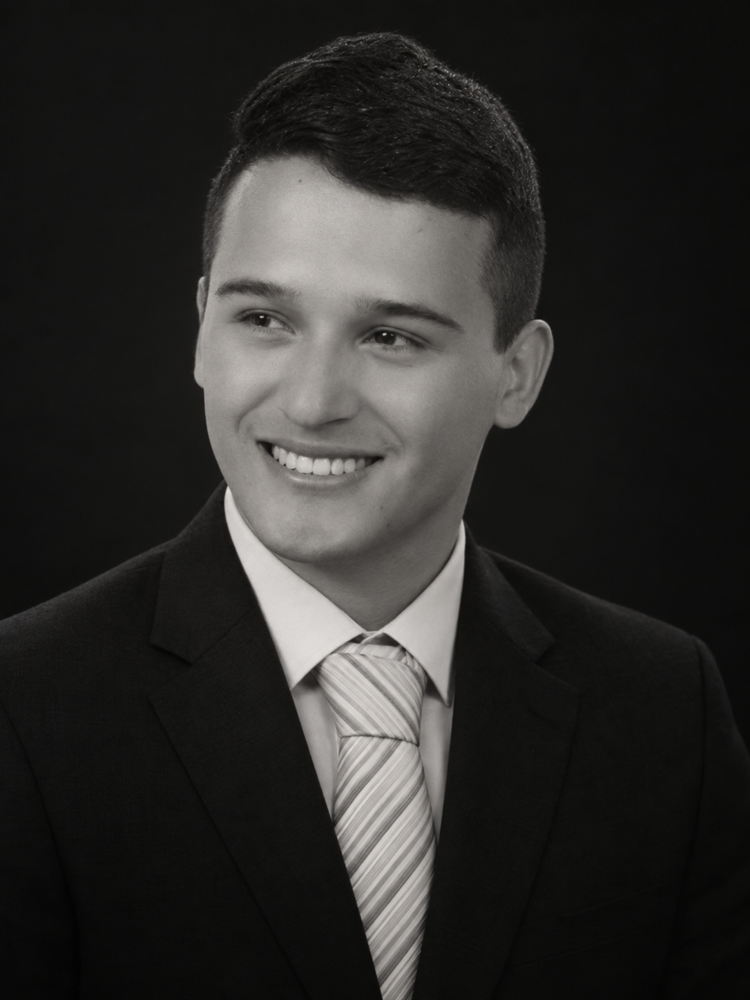

Academic View

Alejandro Gamba
M.D., MSc. | Ph.D. Candidate
Behavioral and Cognitive Neuroscience
University of Florida
AI, Metacognition, and Consciousness Lab (AIMC Lab)
Gainesville, Florida
Research Trajectory
My academic trajectory began in medicine and gradually shifted toward cognitive neuroscience, driven by an interest in how the brain represents and interprets information. After research training in London and Paris, my doctoral work has examined similarity judgments, representational similarity analysis (RSA), neural representations, and representational geometry. I also study the relationship between perception and working memory, using motion repulsion as a paradigm for examining perceptual and cognitive interactions. Building on these connected research directions and earlier work on agency, I am interested in extending the study of perception, metacognition, and conscious experience to dynamic, ecologically valid situations, including videogames and interactive environments.
Research appointments
Advisor: Dr. Brian Odegaard.
Research focus: Neural and psychological representational geometry; perception–working memory interactions; metacognition; neural representations and consciousness.
Advisor: Dr. Hakwan Lau.
Context: Summer research internship completed alongside the RIKEN CBS lecture course.
Advisors: Dr. Valérian Chambon and Dr. Elisabeth Pacherie.
Activities: Behavioral experiment design & data analysis focused on sense of agency, automation, human–machine interaction, and video games.
Advisors: Dr. Patrick Haggard and Dr. Elisabeth Parés Pujolras.
Activities: EEG experiments, analysis, and reporting in volition research.
Advisor: Dr. Mathieu Landry.
Activities: EEG, psychophysics, consciousness, attention and metacognition studies.
Advisor: Dr. Asim Rashid.
Activities: Fear-conditioning paradigms, immunohistochemistry, tissue slicing, memory and learning studies.
Research Projects
Assessing psychological, neural, and AI-based representational geometries across multiple similarity properties
How are object representations organized across human judgments, the brain, and computational models, and how does this organization change depending on the property being compared?
2022 to 2025 | Active — under review for publication
The documented work compares judgments of 280 objects from 40 categories with fMRI patterns in 11 cortical regions and computational models, while considering measurement reliability and the limits imposed by noise.
This approach helps distinguish differences between representational systems from limitations of the measurements used to compare them.
Methodological contribution; PsyArXiv preprint under review.
Preprint (under review) Research context
Methods: fMRI, CNNs
Not so fast! Comparing the neural markers of self-generated urgency regimes in voluntary actions
What happens in the brain as we decide when to act, and does it matter whether the pressure to act quickly comes from an instruction or from ourselves?
2020-12 to 2021-09 | Completed — MSc dissertation (Distinction)
Methods: EEG, Behavioral task
Sense of Agency, Automation and Videogames: A new framework for Human Machine Interactions
How does the feeling that we caused an action change when a machine takes over part of the task, or when the action happens in a video game?
2021-10 to 2022-06 | Completed — MSc thesis
In the completed MSc work, high-level automation was associated with a reduced sense of agency. A separate qualitative analysis of games suggested that assistance could support players' intentions. These are different kinds of evidence, not proof that games reverse the effects of automation.
Distinguishing levels of control provides a framework for studying how intentions, feedback and human-machine interaction shape agency.
Completed MSc thesis; experimental and qualitative evidence are kept distinct.
Methods: Behavioral experiments, Human–computer interaction
Cognitive and Metacognitive Constraints on Motion Repulsion
Why can two directions of movement look farther apart than they really are, and can we recognize that distortion in our own experience?
2023 to present | Active — manuscript in preparation
Preliminary behavioral observations suggest that motion repulsion can remain robust across changes in memory demands and attentional conditions. Confidence experiments are ongoing; this does not establish that attention or memory never matter.
The work motivates examining perceptual distortions and awareness of those distortions separately, rather than assuming confidence directly tracks the illusion.
Preliminary observations; manuscript in preparation.
Related published abstract (2024) Preliminary research context
Methods: Behavioral psychophysics, Confidence judgments
Neural Dynamics of Motion Repulsion
When does a visual distortion emerge in the brain: while we see movement, while we remember it, or while we decide what to report?
2024 to present | Active — analyses ongoing; manuscript in preparation
Methods: EEG, Multivariate decoding
Prestimulus Neural Activity and Subsequent Conscious Perception
Could the brain's activity before something appears help explain whether we consciously see it?
2026 to present | Active — preregistered secondary analyses
Methods: fMRI, Open-data secondary analysis
Research outputs
Publications & scholarly writing
Journal articles and preprints
1. Gamba, J. A., Peters, M. A. K., Taschereau-Dumouchel, V., & Odegaard, B. (2025). Assessing psychological, neural, and AI-based representational geometries across multiple similarity properties. PsyArXiv preprint [under review]. https://doi.org/10.31234/osf.io/fz94u_v2
2. Gamba, A., Bados-Enriquez, D. M., & Gonzales-Huamán, P. (2019). Análisis Transversal de Intercambio Internacional de Estudiantes de Medicina Colombianos. Rev SCientifica, 17(1), 11–14. http://revistasbolivianas.ciencia.bo/pdf/rsscem/v17n1/v17n1_a06.pdf
Other publications and writing
3. Gamba, A. (2021). “Transiciones inesperadas del Santuario cervecero: El Monje” Soy egresado, 30th ed., art 7. https://egresados.bogota.unal.edu.co/index.php/component/content/article/soyegresado30-articulo7?catid=2
3. Gamba, A. (2018). “NOREs, an integral position in the IFMSA.” Medical Students International, 37th ed., p. 106. https://issuu.com/ifmsa/docs/msi_37__updated_
4. Gamba, A. (2017). “Intercambios con ASCEMCOL: en busca de los médicos del futuro.” Elsevier Connect [Blog].
5. Gamba, A. (2017). “SCOREbels, more than a Committee.” The Americas Heartbeat — IFMSA, p. 39. https://issuu.com/ifmsa/docs/americas_heartbeat_2017_-_preview_2
6. Gamba, A. (2017). “Intercambios en IFMSA: una aventura cultural.” Ósmosis — IFMSA Spain, 7th ed., p. 12.
7. Gamba, J. El Magno Cambio. Historical book on causal problems and predictions in the context of climate change. [Completed manuscript — seeking publication].
Conference presentations, abstracts & talks
Posters and conference abstracts
1. Gamba, J., & Odegaard, B. (2026, June 30–July 3). An explicit deconstruction of the Neural Correlates of Consciousness (NCC) in neural representational terms. Poster presented at the Association for the Scientific Study of Consciousness (ASSC) Annual Meeting, Santiago de Chile, Chile.
2. Gamba, J., Taschereau-Dumouchel, V., Peters, M., & Odegaard, B. (2025, May 16–20). Understanding the representational geometry of psychological and neural spaces across multiple similarity dimensions. Poster presented at the Vision Sciences Society Annual Meeting, St. Petersburg, Florida, USA.
3. Soule, A., Sanchez, L., Zhuang, L., Odegaard, B., & Gamba, J. (2025, April 18). How working memory load shapes motion perception. Poster presented at the Psychology Graduate Student Organization (PGSO) Poster Forum, Gainesville, Florida, USA. Awarded.
4. Gamba, J., Taschereau-Dumouchel, V., Peters, M., & Odegaard, B. (2025, March 29–April 1). Understanding the representational geometry of psychological and neural spaces across multiple similarity dimensions. Poster presented at the Cognitive Neuroscience Society Annual Meeting, Boston, Massachusetts, USA.
5. Gamba, J., Taschereau-Dumouchel, V., Peters, M., & Odegaard, B. (2025, February 7). Understanding the representational geometry of psychological and neural spaces across the ventral visual pathway. Poster presented at the North Central Florida Society for Neuroscience Chapter Conference, Gainesville, Florida, USA.
6. Gamba, J., Taschereau-Dumouchel, V., Peters, M., & Odegaard, B. (2024, September 4–7). Exploring representational dynamics: Object similarity comparisons and perceptual-memory interplay. Poster presented at the CIMCYC International Doctoral Summer School — Representations in Cognitive Neuroscience, University of Granada, Granada, Spain.
7. Gamba, J., Stelmashenko, A., Soule, A., Dawes, A., Lau, H., & Odegaard, B. (2024, May 17–22). Task-irrelevant motion information modulates working memory representations. Poster presented at the Vision Sciences Society Annual Meeting, St. Pete Beach, Florida, USA. Published abstract: Journal of Vision, 24(10), 1433. https://doi.org/10.1167/jov.24.10.1433
8. Gamba, J., Johnson, G., & Odegaard, B. (2023, July 19–20). Reliability of representational space from similarity judgments across multiple dimensions and languages. Poster presented at the International Symposium on Predictive Brain and Cognitive Feelings, University of Tokyo, Tokyo, Japan.
9. Gamba, J., Johnson, G., & Odegaard, B. (2023, July 3–7). Reliability of representational space from similarity judgments across multiple dimensions and languages. Poster presented at the RIKEN CBS lecture course “Learning and Imagination: Neural Mechanisms in Humans and Animals,” RIKEN CBS, Japan.
Talks and other scientific presentations
1. Gamba, J. (2025, April 25). Object representations in our mind, our brain, and AI. Lightning talk presented to the University of Florida Psychology Department Advisory Board, Gainesville, Florida, USA.
Funding, fellowships & awards
Research support, fellowships & travel awards
Consciousness Commons Award — $8,960
Secondary data analysis on big open datasets: “Pre-stimulus neural activity and conscious perception: a theory-informed investigation using report and no-report fMRI paradigms”
CIFAR Travel Grant — $1,500
Travel support for participation in the CIFAR Neuroscience of Consciousness Winter School.
McKnight Brain Institute (MBI) Professional Development Fund up to $1,200 (2026)
Professional-development support for CNS2025, and ASSC2026 and satellite related events.
Travel Grant — CIMCYC International Doctoral Summer School — $500
Doctoral Summer School on Representations in Cognitive Neuroscience at the University of Granada.
Graduate Student Council Travel Award, University of Florida — $400
Travel award for VSS2024 attendance.
University of Florida Psychology Department Travel Awards — multiple $750 awards
Departmental travel support for conference presentations and scientific meetings.
UF Pioneer Award — RIKEN-related internship — $2,000
Support for the 2023 RIKEN CBS summer research internship in Japan.
RIKEN Travel Grant — $4,000
Travel support for the RIKEN CBS internship and lecture course in Japan.
Three-year Grinter Fellowship, University of Florida — $5,000 supplementary stipend
Graduate fellowship support at UF: replaced by a four-year supplementary stipend.
COLFUTURO Loan-Scholarship Program — 25% tuition (≈£8,000)
Loan-scholarship contribution toward tuition during the Brain and Mind Sciences MSc training.
Universidad Nacional de Colombia — partial funding for research internship — $1,600
Partial support for an international research internship in 2018.
IFMSA clinical and research summer internships — €500
Exchange support for research and clinical summer placements through IFMSA.
Academic distinctions
Teaching & mentoring
Teaching experience
Course: PSY2012 — General Psychology.
Approach: Constructivist and experiential teaching with interactive, collaborative, and problem-solving activities.
TAs: Evodie Alvarez, Hannah Wohlever
Courses: General Psychology (PSY2012); Sensory Processes (EXP3104); Neuroscience of Consciousness (PSB4934); Social Psychology (SOP3004); Cognitive Psychology (EXP3604); Memory and Memory Improvement (PSY4930); Laboratory in Cognitive Neuroscience (PSB4343C).
Responsibilities: Teaching sessions, Q&A sessions, workshops and group activities, grading written assignments, generating feedback, and supporting class/group dynamics.
Research mentoring — AIMC Lab
Mentoring scope: Experimental design, data collection, coding and analysis, interpretation, and scientific communication across behavioral and cognitive-neuroscience projects.
Research Assistants:
Behavioral: Allison Soule*, Abigail Stelmachenko, Lauren Sanchez, Peter Zeledon, Hannah Wohlever, Emelie Selberg, Lindsey Zhuang, Gopika Pillai.
EEG: Isabella Boyd, Evodie Alvarez, Catalina Pfeiffer, Elliot Montaudon, Ehan Shah, Anjali Maddukuri, Aarav Reddy, Melanie Ryzcko, Isabela de Oliveira
Applied Python mentoring — cognitive neuroscience projects
Scope: Applied Python instruction for project-specific data handling, analysis, visualization, and reproducible cognitive-neuroscience workflows.
Behavioral: Ana Lucia Padilla, Jordan Harbour, Jordan Frankel, Isabella Boyd.
NCF-SfN research-group mentoring
Project: Mentoring a student research group using chapter participation and activity data to quantify and visualize the organization’s empirical reach and impact.
Nicholas Ladeia Bochio, Anna Strassnig, Raissa Paes Barreto de Franco, Sophia Uhlyar, Emma Barrios, Angus MacGregor, Ryan Faulkner
Education, skills & additional activities
Education
Research & technical skills
Quantitative, statistical, and representational analysis
General linear models (GLM); linear, multiple, and multivariate regression; mixed-effects / multilevel models; ANOVA-family and repeated-measures analyses; planned contrasts and estimated marginal means; Bayesian and signal-detection-theory analyses; psychometric and behavioral modeling; bootstrap / permutation methods; reliability and noise-ceiling estimation; MCMC; Representational Similarity Analysis (RSA); representational-distance and correlation-based analyses; cross-modal / cross-dataset comparisons; dimensionality reduction (PCA).
Machine learning, programming, and scientific computing
Python (NumPy, pandas, SciPy, scikit-learn, PyTorch); R / RStudio (tidyverse, lme4 / lmerTest, emmeans); MATLAB; JavaScript; machine-learning and deep-learning workflows including convolutional neural networks (CNNs); Git / GitHub; VS Code; data processing and visualization for large behavioral and neural datasets.
Organizational and service tools:
Dashboards, relational databases, and administrative management of small associations through Notion and Fillout.
Experiment development and cognitive-neuroscience software
PsychoPy; introductory Labvanced; SPM; online experiment development; EEG; fMRI analysis; psychophysics; behavioral experiment design; similarity judgments; metacognition; perception–working-memory and motion-perception paradigms; LLM-assisted workflows.
Laboratory methods from earlier research training
Fear conditioning; immunohistochemistry; tissue slicing; DNA/RNA isolation; electrophoresis; PCR.
Professional development, summer schools & workshops
Neuroscience, consciousness, and computational training
Consciousness Commons workshop: Satellite event, ASSC29 — June 2026.
CIFAR Neuroscience of Consciousness: Winter School — December 2025.
CIMCYC International Doctoral Summer School: Representations in Cognitive Neuroscience — University of Granada, September 2024.
NVIDIA — Fundamentals of Deep Learning (online) — February 2024.
RIKEN CBS Internship and Lecture Course — Japan, July–August 2023.
NeuroMatch Academy (NMA) — Computational Neuroscience — 2022.
1st and 2nd Summer School of Consciousness and Metacognition — UCL & PSL, 2021 and 2022.
Hacking Consciousness: “Consciousness, Cognition and the Brain” — Stanford University / iTunes U, March–June 2020.
The Philosophy of Consciousness — The Open University / iTunes U, October 2019.
Philosophy and the Sciences: Introduction to the Philosophy of Cognitive Sciences — University of Edinburgh / Coursera, August 2019.
ASSC23 — London, Canada, 2019; ASSC24 — online, 2021.
Training, facilitation, and earlier medical/scientific conferences
Certified Exchange Trainer (TNET), IFMSA — training completed at the Americas Pre-Regional Meeting, Encarnación, Paraguay, 2018.
Certified Trainer (TNT), IFMSA — first Training New Trainers in Colombia, Cali, 2016.
International Training on Disaster Medicine (IDMT), Sub-Regional Training — Querétaro, Mexico, 2016.
Neural Plasticity in Health and Disease Symposium — Toronto, Canada, 2018; Gairdner Symposia — Toronto, Canada, 2018.
Colombian Student Congress of Medical Research (CECIM) — Armenia 2014, Cali 2015, Bucaramanga 2016, and Villa de Leyva 2017.
I Symposium of Lupus Update: A Multidisciplinary Approach — Bogotá, Colombia, 2015.
I GIS of Colombia — Paipa, Colombia, 2016; XVI CNA / I National Congress of Emergencies — Villavicencio, Colombia, 2016; XVII CNA — Medellín, Colombia, 2017.
VIII CUMIS (Research and Service Multidisciplinary University Camp) — Córdoba/Pijao, Quindío, Colombia, 2017.
Leadership, academic service & memberships
National Officer on Research Exchange (NORE), ASCEMCOL — Standing Committee on Research Exchange (SCORE). Colombia
Coordinated incoming and outgoing research exchanges nationally, organized the national team, and led a committee structure of 30+ people.
International research & clinical exchanges
Research Exchange Student, Medical University of Silesia, Molecular Biology and Genetics — IFMSA. Katowice, Poland
Advisor: Aleksandra Augubciak-Duma.
Project: Analysis of a selected group of human genes and comparison of their activity under normal and pathological conditions.
Methods: DNA and RNA isolation, electrophoresis, and PCR.
Outreach & public engagement
Industry experience
Activities: Surveyed gaming genres and market structure; conducted a deep-dive analysis of a game genre covering game mechanics, KPIs, revenue models, and player psychology; synthesized findings into recommendations on market-expansion opportunities.
Languages
Spanish: Native | English: C1 (TOEFL iBT, 2018) | French: B2 (Sorbonne certificate, 2022) | Japanese: Basic (uncertified)
Academic Path
This page makes visible the attempts that conventional CVs usually hide. It is intentionally selective and factual: each entry records an application, submission, or effort that did not succeed, together with when it happened.
Click here to explore my Academic Path
Rejections & unsuccessful attempts
“Academic progress is built not only from what succeeds, but from the many attempts that do not. Rejection and failure are not detours from the path — they are part of it.”